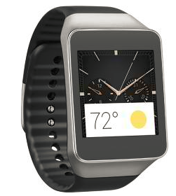
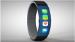

Samsung - Gear Live Smart Watch for Select Android Devices
All watches tell time. This one helps you make the most of it.
Designed for use with select Android devices, this Samsung Gear Live SM-R3820ZKAXAR smart watch lets you clearly see important mobile notifications on the 1.6" Super AMOLED touch-screen display. The Bluetooth 4.0 LE interface simplifies pairing.
$99
Klout PERK 10% Discount!
|
iWatch Classic
|

iWatch Sport
|
iWatch Regular
|
iWatch Gold
|
|---|
|
Battery Life
|
Price
|
Pics
|
Ratings
|
Screen
|
|---|
| Community Discussion - Klout Influencers |
|---|
 Id: JonathanR Id: JonathanR 50 50Posted: Oct 1, 14 Best smart watch thus farThis is my favorite fitness watch to use with my devices. Yes it only works with these devices but I have a device. So I love it! and it doesn't have the stupid camera making the price less and more affordable. I recommend this! Id: DaleH 49 Id: DaleH 49Posted: Oct 2, 14 PriceThis is the second generation of smart watches. Less than two months old and they brought out a third version. All three have different Operating Systems. Just throw your money down the drain, the next big thing will be out tomorrow. Id: DiAnnaR 31 Id: DiAnnaR 31Posted: Oct 3, 14 RatingsExcellent watch amazing 100% recommended will get these products again. Id: YuriK 48 Id: YuriK 48Posted: Oct 4, 14 ScreenI purchased this watch to use while I exercise because I do not always want to carry my phone with me. It took a little bit to fully learn how to use; and I am very tech savvy, but once I figured everything out it was a fun little toy to have. I did return this watch however, because the new ones are coming out in a few weeks and I like the upgrades that are going to be included. |
|
Id: AlexW
99.56Posted: Oct 5, 14 Good but could be betterProduct works as expected, I prefer the appearance of a being a watch, the ability to interact with your phone apps, emails, notifications and remote TV functions. One side note is the heart rate sensor is somewhat sensitive when your arm is sweaty, need to take your heart rate first, be still, before you enable sensor. Overall, I love this product.
Id: BillM
20Posted: Oct 6, 14 Battery LifeAwesome piece of wearable tech. You will not miss the camera. Gear 2 devices feel VERY much like a normal wristwatch. Reasonable price. You will not regret this purchase.
Id: AdamS
22Posted: Oct 7, 14 PriceThe heart rate monitor is totally useless in any fitness application. You have to stand totally still and not even speak. Even then it gets a heart rate less than 50% of the time.
Id: VijayP
80Posted: Oct 8, 1420 RatingsI bought the watch to monitor my steps. (Specifically when I mow the yard). It is down right horrible for that, I am fairly certain the vibration causes the problem. On the other hand - it seems to be fairly accurate for normal walking. Be aware that it seems to measures movement i.e. swinging arms. Pause the stepper if you are not actually up and about walking. This seems to help its accuracy. The speaker for the phone is decent but sweat seems to be an issue with clarity. You must be in range of your cell phone to receive calls. That range is relatively short. |
|
Id: GregA
23Posted: Oct 8, 14 Wearable SmartWatchFirst I am a female in the military, got this just for the fitness function, so while yes we run there are also other exercises we do. This watch only does walking running hiking and u can be using a machine u have to actually be outside. The 3 mile track here it always says it's either 3.21 to 3.27 miles and calories burned are not accurate. While doing cross fit or other exercises it will regulate u r heart rate but not calories burned. After an intense 55 minute workout with cardiovascular and weights it said 57 calories burned. If u sweat alot it loses all connect and u r phone isn't going to work tell u dry it out. It doesn't seem to connect to any app but it's own. For the pedometer it's not to bad but of u turn a circle it will add 2-3 steps. I mainly use it to check my heart rate so I know where I am at (I was recently hooked to an ekg and this was only 1-2 off) and for text messages and phone calls when my phone gets low. My mom does say she can hear me better on my watch then my s5. the fit: it's so big and has to be so tight that I find myself taking it off often. Not mention for a women's wrist. If I had to do over again I wouldn't have bought this for a fitness watch. Way over priced on what u get.
Id: TomB
10Posted: Oct 8, 14 ScreenThis is the second generation of smart watches. Less than two months old and they brought out a third version. All three have different Operating Systems. Just throw your money down the drain, the next big thing will be out tomorrow.
Id: MarkW
65Posted: Oct 9, 14 ScreenThis technology needs to be developed more, i was looking for more phone capabilites for my watch, but it's just tells you that you have messages and you can read some but mostly you need to refer back to your phone. |